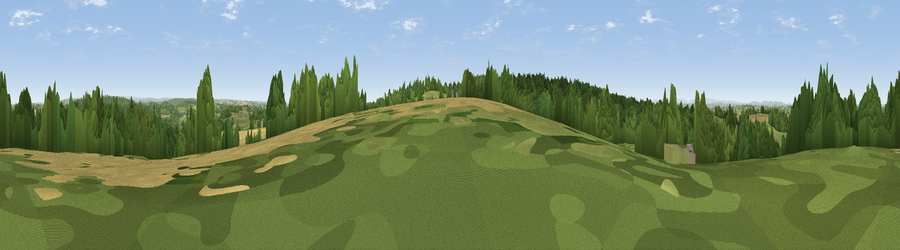

Viewpoint near Ashley
#35729 in England · top 65% of its area beats it · near AshleyWhere it is
The exact computed spot (SJ 74975 37425). Click the marker for map links.
The view, rendered

A 360° render of this exact spot computed from the terrain model, tree cover and land cover — summer colours, afternoon light, calibrated against photographs of famous viewpoints. Real trees, hedges and buildings will differ in detail.
The panorama
Grey silhouette: terrain skyline in each direction (720 bearings, Earth curvature and refraction included). Dashed green: skyline with trees (+15 m) and buildings (+8 m) as obstacles. Blue strip: how far the ground is visible on each bearing.
Where the view opens
Wedge length = distance to the farthest visible ground on that bearing (vegetation-aware). Rings at 10, 25 and 50 km.
What fills the view
47% grassland · 31% woodland · 20% cropland · 1% built-up
Angular shares of the visible panorama (visual magnitude), not map area. Landscape diversity 0.48 (0–1 Shannon).
Key numbers
More beautiful places nearby
The staircase of upgrades: each row has a higher view potential than everything closer. Driving times are estimates from straight-line distance, calibrated against real road routing — check an actual route before setting out.
| Place | Direction | Drive | Score |
|---|---|---|---|
| Viewpoint near Loggerheads | SW · 1 km | ~3 min | 51.0 |
| Viewpoint near Aston | NNE · 3 km | ~8 min | 57.5 |
| Woore Hill | NNW · 5 km | ~12 min | 60.1 |
| Bar Hill | NNE · 7 km | ~14 min | 61.3 |
| Viewpoint near Madeley | N · 7 km | ~14 min | 66.7 |
| Bignall Hill | NNE · 16 km | ~28 min | 75.2 |
| Viewpoint near Marchamley | WSW · 19 km | ~32 min | 77.5 |
| Viewpoint near Mow Cop | NNE · 23 km | ~37 min | 80.2 |
52.93364, -2.37376 · source: screening · position refined by local search. Computed location — check access rights before visiting.